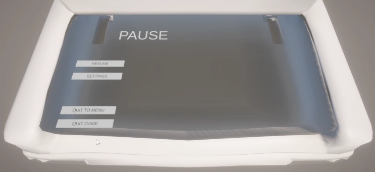
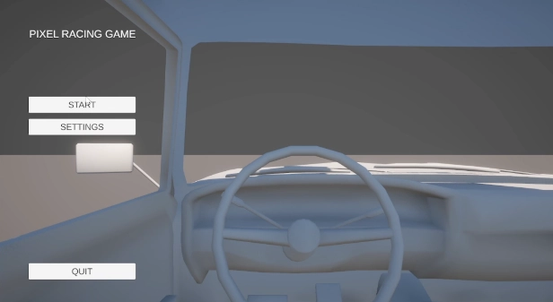
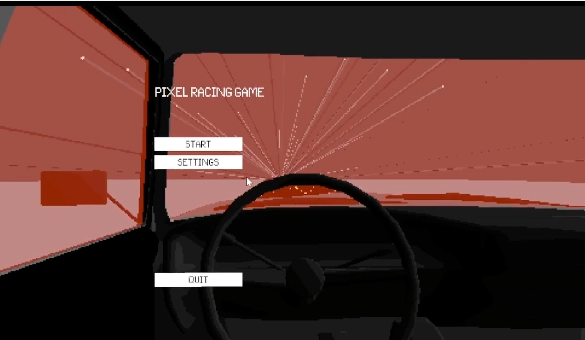
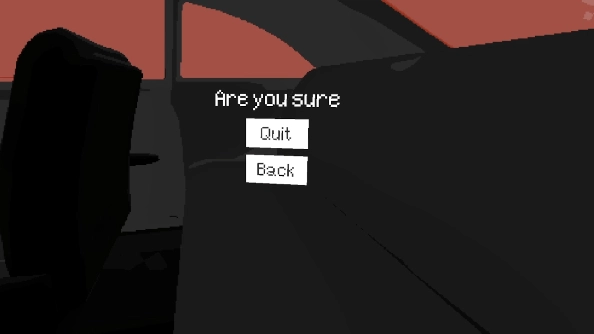
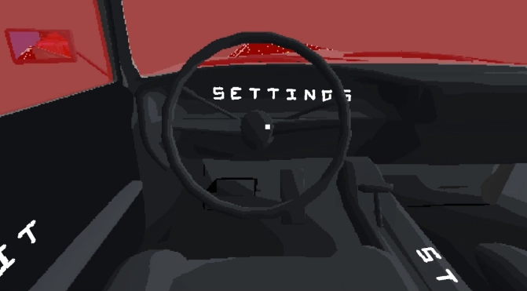
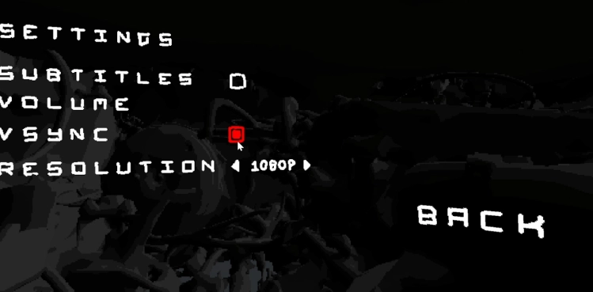

02/10/23 15:50
The initial concept was to do a camera that would move around a building similar to Grid 2, but early on I decided to make it more focused on the car. I started by just getting the car in place, positioning cameras in the different locations and transitioning between them.
     